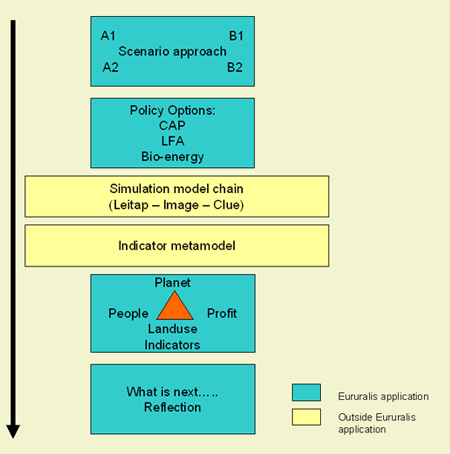

Eururalis is based on a series of concepts within which modules have been constructed. The relationship between those concepts is visualized in the architecture of Eururalis:

Policy discussion orientation:
Topics have been selected on current and projected policy relevance based
upon analysis of recent EU-policy documents. Eururalis is a discussion
support model, not a decision support system. Facts and figures and transparency
in what-if questions and answers are fundamental.
| top of page |
Spatial and temporal specification
Eururalis offers geographical detail through a nested approach, from global
level, via EU-level, to national level, NUTS regions (when feasible and
relevant) and at a high spatial resolution of 1 km2 . Temporal specification
is given for each 10 year interval. between 2005 and 2030 .
| top of page |
Scenario-Approach
Eururalis uses four explorative, contrasting scenarios. Predictive scenarios
have not been used. Eururalis uses scientifically and politically accepted
approaches (IPCC, SRES, CPB), adapted and detailed to service the defined
objectives.
| top of page |
From Drivers to changing conditions, effects
and response
Drivers are "external or outside forces" exerting influence
on Europe's rural area and causing changes in People, Planet, Profit indicators.
Driving processes are interrelated: for example climate change depends
on economic growth and in turn economic growth relates to demography or
technology. The major drivers are:
- Demography: the extent and age of the population. These determine the demand for food, the need for housing and energy. #
- World economy/welfare: demand and supply, exchange of goods and services. These determine the flow of labour, income, consumption patterns, capital investment and other factors, such as unemployment.
- Climate change and related conditions: shifts in precipitation, temperature and water discharge (flooding) or sea level rise bring various risks or opportunities.
- Technology: this causes significant effects on land use and other aspects e.g. mobility, communication. As such it is difficult to include specifically in the models but the dissemination of new technology can be assumed.
- EU-enlargement and trade arrangements implies change in international politics and policy making. The increasing role of international governance, international treaties (such as WTO, Agreements on Biodiversity or Environment, Kyoto). On continental level the formation and expansion of the EU.
- Consumer patterns are difficult to define, but are influential: e.g. consumption patterns (diet changes), an increased awareness of ecological or social problems or concerns on animal welfare.
| top of page |
Policy Options
Four policy options are elaborated in Eururalis 2.0. Policymakers can
use these options to examine what the effect of these policies on the
long term can be. The four policy options are:
- CAP market support
- CAP income support
- Bio-energy policy
- Less Favoured Area policy
| top of page |
Core models and metamodel
Models help to assess effects assuming changes in driving forces. Models
are fed with data, follow formal rules to simulate interactions and give
outputs in required format (such as tables, graphs, maps). Three "state
of the art" core models are at the heart of Eururalis and are linked
to specific Eururalis goals. Meta-models are used to specify effects on
certain indicators.
| top of page |
Basics of sustainable development- People,
Planet, Profit: Indicators 3 P
Sustainable development where economical, ecological and socio-cultural
aspects have been developed in balance and mutual interest has guided
the selection of topics and the evaluation of outcomes. For the three
'P' domains several indicators were selected.
| top of page |
Reflection
The results are assessed and evaluated by experts and discussed with policy
makers. The outcomes are evaluated in different ways. First the results
of the individual indicators are considered. Secondly an integrated assessment
is carried out where developments on several indicators are integrated.
Thirdly a regional assessment is carried out where the focus is on regions
that share the same characteristics and developments.
| top of page |